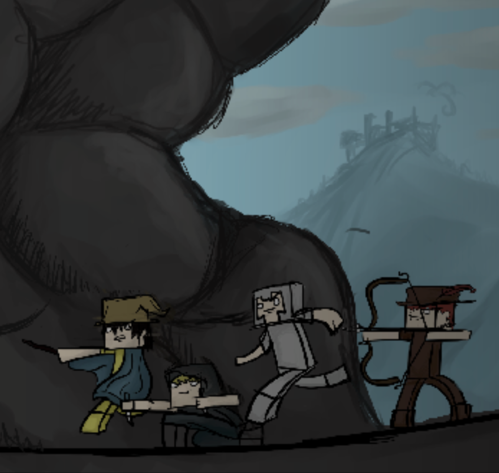
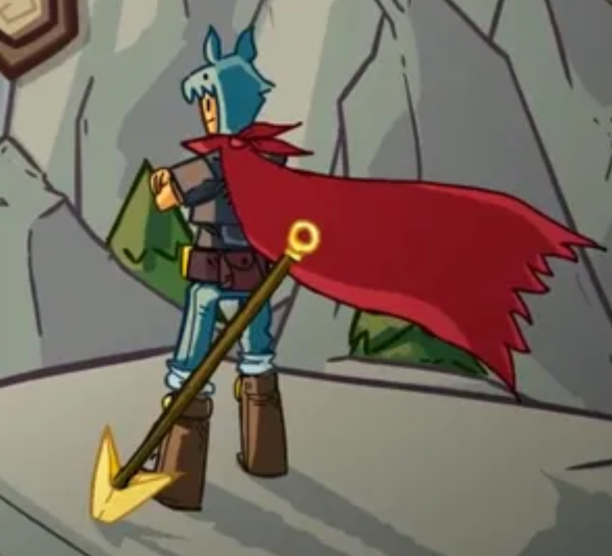

Guides
Introductions to modern Wynn written by returners for returners! A supplement to the wiki with a focus on relearning and a lens on changes.
Learn more
Do you remember wearing slime balls as amour, using iron tools as weapons, and pvping in the early nether? So do we! From using the old spells to defend towns from swarms, to traveling around the map on a t2 horse you bought from VIP town, we were there with you!
The foremost gathering place for older players and memories.
Like you, we returned to what seemed like an entirely new game! Refinements and rebuilds everywhere, new classes, a completely new item system, and seemingly endless ability and skill changes! We've made it our mission to help ease returning players back into the game!
Resources supporting older players as they return to the game.
Wynn is better with friends; have you recently returned to the game only to find your original friends and guild have long since departed? You're not alone! Most of us encountered the same challenge, and from that, an in-game guild (more of a friend group) was born!
A relaxed, casual, community by and for people like you!
Introductions to modern Wynn written by returners for returners! A supplement to the wiki with a focus on relearning and a lens on changes.
Learn more
A lot has changed since you were last here! We did our best to sum it up! Every major update consisely charactarised for your convenience!
Learn more
The Wynn community has always had a variety of third party resources and gathering places; we've done our best to provide an updated directory!
Learn more
The items you logged off with are now fragile and valuable! Whether you want keepsakes or emeralds, we've done our best to index everything worth keeping!
Learn moreOur discord is open to everyone!
If you have any questions, want to share memories, or simply want to say hi, feel free to join us!